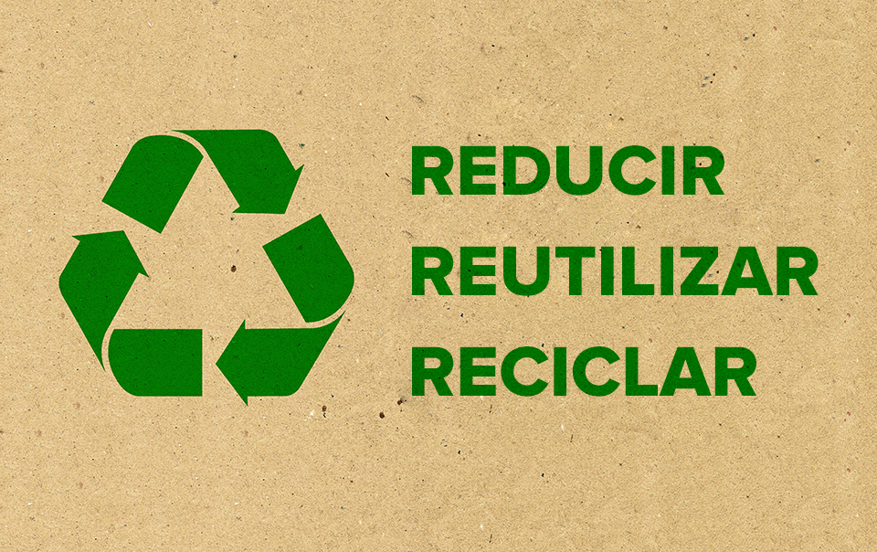
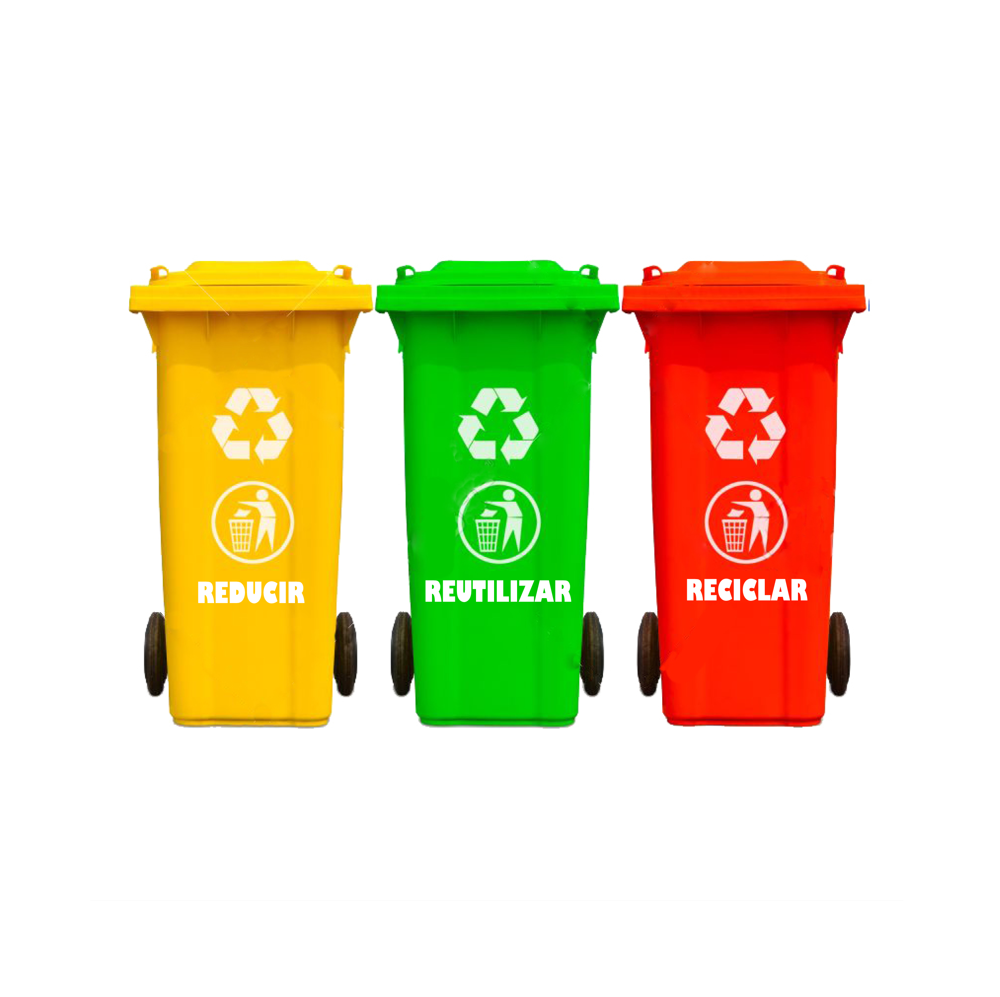

Problemática general sobre el plástico
La contaminación por plástico es la acumulación de productos de plástico en el medio ambiente que produce efectos adversos sobre la vida silvestre, el hábitat de la vida silvestre, o los humanos. Existen numerosos tipos y formas de polución por plástico. La polución por plástico puede afectar de forma negativa a los terrenos, cursos de agua y océanos. En determinadas regiones se han implementado planes para intentar reducir el consumo de plástico y promover el reciclado de plástico. La importancia y extensión de la polución por plástico esta correlacionada con el bajo costo y durabilidad del plástico, lo que conduce a que los seres humanos utilicen gran cantidad de elementos de plástico.
Objetivo
El objetivo de la pieza de comunicación es concientizar sobre los problemas que está causando el plástico y cómo podemos reducir la cantidad que usamos diariamente y así poco a poco tratar de hacer un mundo mejor.
